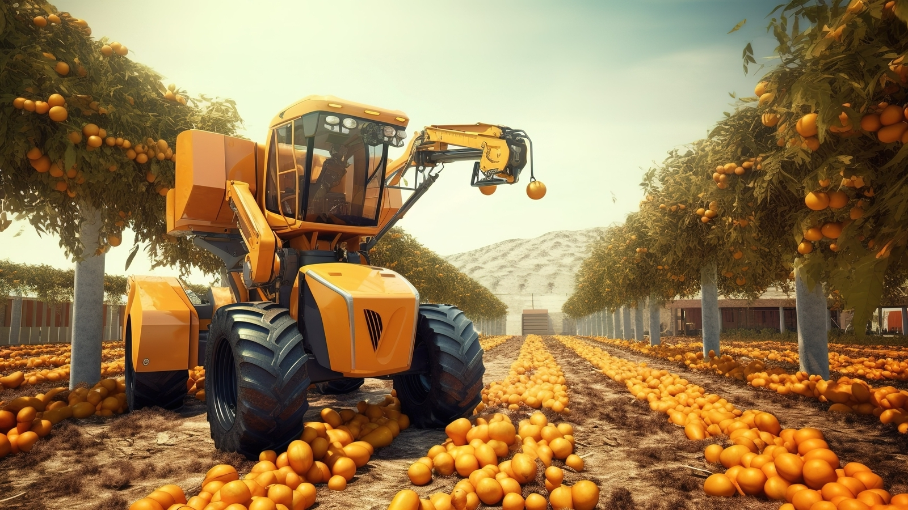
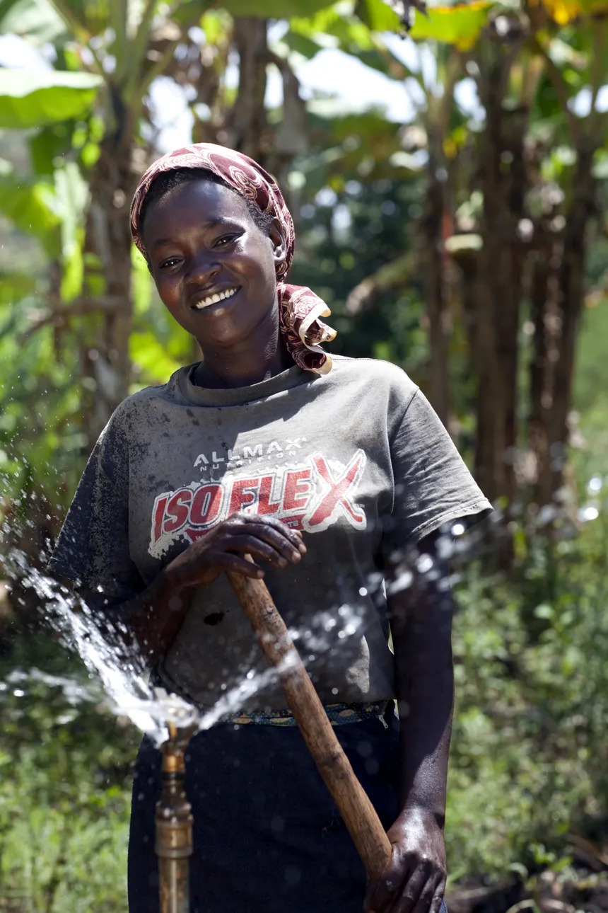
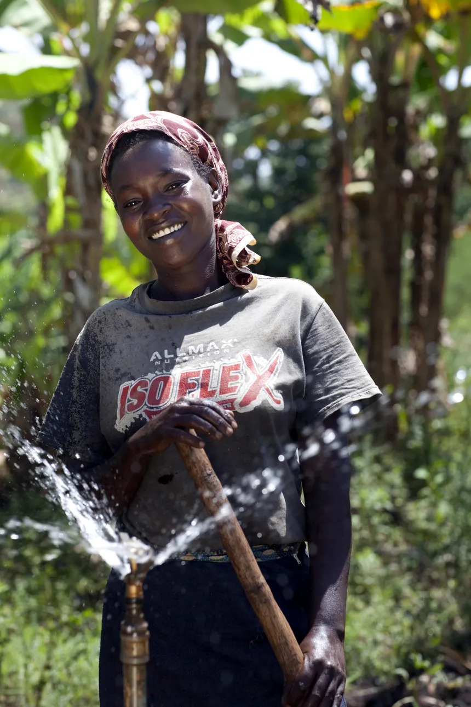

Empowering Kenyan Farmers

Discover the Best Time to Plant

Grow More with AgrihubKe

Start Your Farm Journey with Us

Training for Success
Welcome to AgrihubKe
AgrihubKe is a platform designed to empower Kenyan farmers by providing them with the tools, knowledge, and community support they need to thrive. Whether you're a beginner or an experienced farmer, we offer resources on farming techniques, weather forecasts, market trends, and much more to help you succeed.
Our mission is to help farmers improve their productivity, increase their profits, and contribute to the sustainable growth of the agriculture sector in Kenya.

 
